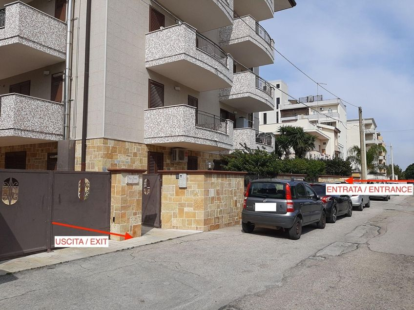
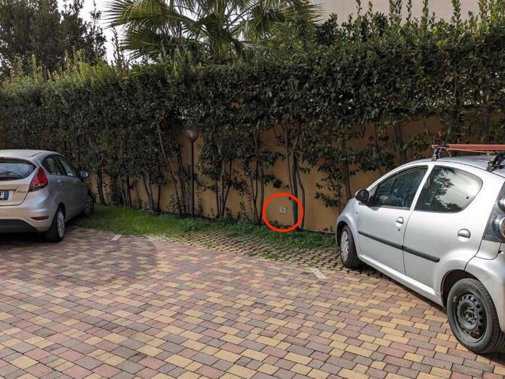
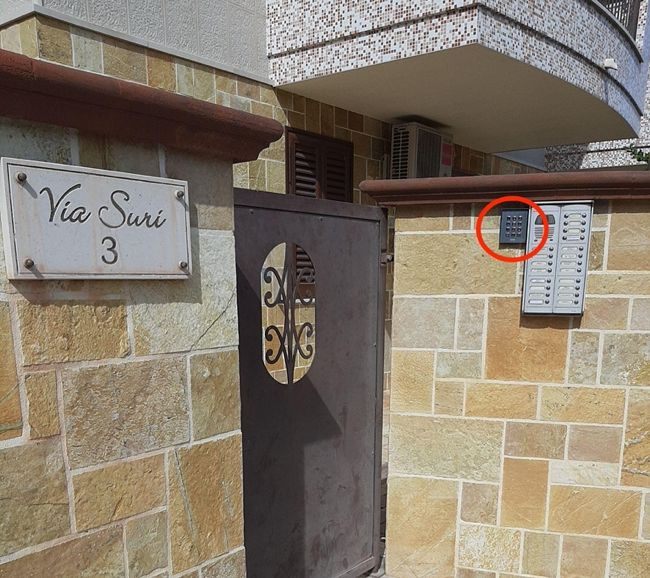
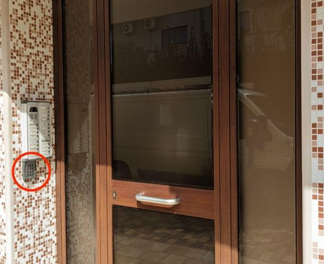
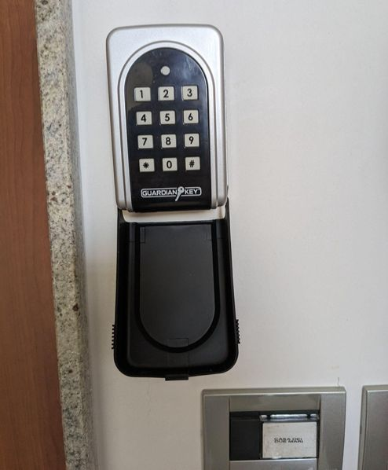

Benvenuti alla Casa dei Due Mari! Siamo Lucia e Marco, i vostri ospiti, e siamo felici di avervi qui. Curiamo ogni piccolo dettaglio per rendere il vostro soggiorno il più piacevole possibile — speriamo che l'appartamento superi le vostre aspettative.
Qui sotto trovate tutto ciò che vi serve per accedere all'appartamento. Avrete bisogno di due codici, che vi invieremo dopo aver ricevuto le foto dei passaporti di tutti gli ospiti via WhatsApp.
Arrivo e Parcheggio
Siamo in Via Suri 3, San Vito, Taranto — apri in Google Maps.
All'arrivo potete parcheggiare fuori dal cancello principale. Se preferite parcheggiare all'interno, usate il cancello contrassegnato come ENTRATA (vedi foto). Il telecomando nell'appartamento apre entrambi i cancelli: il tasto in basso a sinistra per entrare, il tasto in alto a sinistra per uscire.


Apertura del Cancelletto Pedonale
Accanto al citofono troverete un tastierino. Digitate il PRIMO CODICE + * (asterisco) per aprire il cancelletto pedonale.

Ingresso in Condominio
Usate di nuovo il PRIMO CODICE + * (asterisco) sul tastierino della porta d'ingresso del condominio per entrare nell'edificio.

Ritiro delle Chiavi
Prendete l'ascensore (o le scale) fino al terzo piano. Il nostro appartamento è sul lato destro uscendo dall'ascensore.
Davanti alla porta troverete una piccola cassetta di sicurezza per le chiavi. Abbassate il coperchio nero, quindi digitate il SECONDO CODICE + # (cancelletto) per aprirla e ritirare le chiavi.

Avete bisogno di aiuto?
Siamo sempre disponibili. Contattateci via WhatsApp.